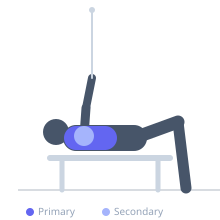

Exercise guide / Standing Cable Pullover with Rope
Standing Cable Pullover with Rope
The standing cable pullover with a rope attachment allows the hands to pronate and spread at the bottom of the movement, creating a more natural wrist path and greater lat contraction than a straight bar pullover. The rope version is performed facing a high cable with the torso bent slightly forward, drawing the rope from overhead to the thighs in a large arc while maintaining straight elbows.
Primary muscles
latissimus dorsi
Secondary muscles
trapezius lower
teres major
deltoid anterior
Stabilizers
erector spinae
Equipment
Cable Machine (High Pulley)


Starting position
- Stand facing a high cable pulley. Attach a rope. Grasp the rope and step back, bending forward slightly at the hips. Arms extended overhead toward the pulley.
Setup
- Set the cable to the highest position. Bend forward 20-30 degrees at the hips to allow a fuller arc. Moderate weight.
Steps
- Step 1: Begin with arms extended overhead, lats stretched.
- Step 2: Pull the rope down in a broad arc, keeping elbows straight.
- Step 3: As the rope reaches hip level, spread the hands apart slightly.
- Step 4: At the bottom, squeeze the lats hard for 1 second.
- Step 5: Return under control — the stretch at the top is as important as the contraction.
Coaching cues
- Spread the rope apart at the bottom to maximize lat contraction
- Think of pulling your armpits to your hips
- Long arms throughout — no elbow bend
Breathing
- Exhale on the pull. Inhale returning overhead.
Range of motion
- Full overhead stretch to thigh contact at the bottom.
Tempo
- 2-1-3-0
Common mistakes
- Bending the elbows — this becomes a pulldown, not a pullover
- Standing too upright — a slight forward lean increases the range and lat emphasis
Safety
- Keep the core braced — a bent-over position with heavy loads stresses the lower back
- The shoulder must be healthy to load the overhead stretched position
Training
- hypertrophy: 12–20 reps
- hypertrophy: 3–4 sets
- Rest: {'hypertrophy': 60}